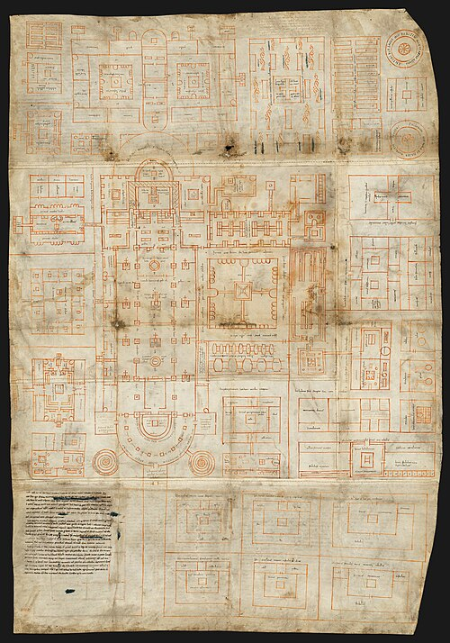
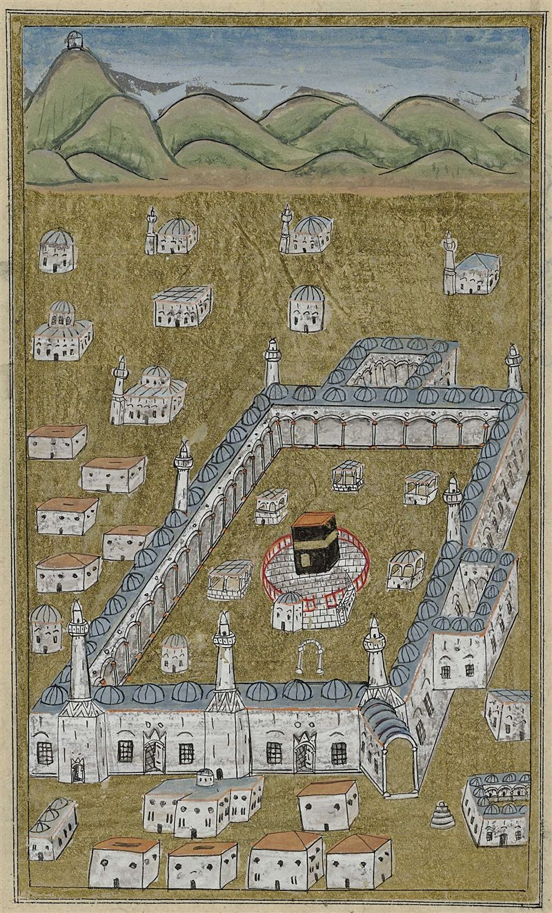

En la Edad Media temprana la ciudad cobra valor como representación de una nueva temporalidad: es un espacio de articulación de la vida social, política y económica y el lugar predilecto para expresar las nuevas formas de relación social de las sociedades cristianas y musulmanas. No surge ni entra en su auge: emerge como un espacio organizado bajo nuevos proyectos civilizatorios.
Occidente cristiano y bloque musulmán se dedicaron a organizar el espacio de sus ciudades para reflejar distintas formas de ver, vivir y hacer el mundo. Por eso estudiar esa organización espacial invita a valorar fuentes más allá de los documentos oficiales: lugares que fueron lugares vivos.
“Las ciudades han sido siempre los grandes escenarios históricos, no sólo de la crónica política y de los hechos espectaculares, sino también de esa otra historia que va creando a través de los siglos la labor lenta, afanosa y sin resonancia de millares y millares de seres anónimos”.
(Torres Balbás, 1954, p. 60)
Analizar la organización espacial enriquece cualquier investigación sobre el pasado: permite alejarse del puerto de la oficialidad sin perderlo de vista y orientarse hacia un actor histórico que es protagonista y espectador, con la sociedad en su conjunto como cómplice. Este recorrido se concentra en la configuración espacial de las ciudades y en el papel del factor religioso, con mezquitas e iglesias como espacios organizadores no solo de la vida social, sino también de la vida espacial de las personas.
Las ciudades cristianas y musulmanas responden a procesos y cronologías distintos, influidos por el factor religioso, la geografía y las transformaciones económicas. Por eso se hace una comparación diacrónica y estructural: se aborda la evolución de un fenómeno en tiempos diferentes, ubicando cada uno en su tiempo y espacio precisos. En el caso cristiano, la vida urbana clásica sufre una grave regresión económica y demográfica alrededor del siglo V; el desarrollo de la ciudad musulmana espera la conformación del Califato Omeya, hacia 661 E.C. (41 A.H.).
Torres Balbás, L. (1954). Las ciudades musulmanas y su urbanización. Revista de Educación, (6), p. 60. Delgado Gómez, S. M. Todos los caminos conducen al templo: las ciudades medievales y el factor religioso (siglos VII–X). Universidad Pedagógica Nacional.
Tras la caída de Roma, cristianos y musulmanes se hicieron la misma pregunta: ¿cómo ordenar el espacio para que refleje una forma de entender el mundo? En ambos casos, lo sagrado fue el hilo que organizó la ciudad, pero tiraron de él en direcciones contrarias.
Nació de la inercia de un imperio que se desmoronaba: la Iglesia heredó la ciudad romana y la convirtió en ciudad episcopal.
Toca cada tarjeta para desplegarla.
“La ciudad medieval, tal y como aparece a partir del siglo XII, es una comuna que, al abrigo de un recinto fortificado, vive del comercio y de la industria y disfruta de un derecho, de una administración y de una jurisprudencia excepcionales que la convierten en una personalidad colectiva privilegiada”.
(Pirenne, 1972, p. 137)
“Un régimen teocrático había reemplazado completamente al régimen municipal de la antigüedad. La población estaba gobernada por su obispo y no reivindicaba nada…”.
(Pirenne, 1972, p. 34)
“Las ciudades cristianas tenían una participación activa en su gobierno, por medio de los ayuntamientos y la catedral, que eran los ejes de la política ciudadana […] La burguesía medieval, urbana y feudal, controlaba el gobierno de las ciudades”.
(Anexo 7: La ciudad medieval, s. f., p. 2)
Pirenne, H. (1972). Las ciudades de la Edad Media. Alianza Editorial. Anexo 7: La ciudad medieval. (s. f.).

«Planta de Sankt Gallen». Wikipedia, la enciclopedia libre. https://es.wikipedia.org/wiki/Planta_de_Sankt_Gallen
Nació de la expansión de una fe: asimiló ciudades antiguas, fundó campamentos y levantó capitales como Bagdad.
Toca cada tarjeta para desplegarla.
“La zona periurbana se define en función de la cerca urbana, que encierra elementos o espacios mutuamente diferenciados pero que posee cada uno su recinto: la ciudadela o fortaleza político-militar, la medina o ciudad civil, los arrabales…”.
(Epalza, 1991, p. 10)
“La mayor parte de la población residía fuera del centro, en otros barrios (harat) […] Los habitantes de un barrio solían vincularse por un origen común, religioso, étnico o regional […] Estos lazos creaban una solidaridad muy fuerte”.
(Youssef Hoteit, 1993, pp. 40–41)
“Para su gobierno la Córdoba califal contaba con el sahib al-madina (zalmedina) o gobernador de la ciudad; el qadi o juez, el sahib al-suq (zabazoque) o inspector y juez del mercado…”.
(Ríu, 1991, p. 241)
“La función de la hisba es un cargo religioso […] No tiene una competencia general para todos los hechos que se le presentan sino solamente para lo que concierne al fraude, en los engaños en los alimentos y otras mercancías así como en las medidas y en los pesos”.
(Ibn Jaldún, citado en Youssef Hoteit, 1993, p. 9)
Epalza, M. de (1991). Youssef Hoteit, A. (1993). Cultura, espacio y organización urbana en la ciudad islámica. Cuadernos de Investigación Urbanística, (5). Ríu Ríu, M. (1991). La ciudad en el ámbito mediterráneo durante el cambio de milenio. En Actas del Congreso La Ciudad Islámica.

Escuela persa. Islam: vista de la Kaaba… Miniatura persa. Meisterdrucke.
Elige una dimensión y compara.
¿A qué ciudad pertenece cada rasgo?
Ambas ciudades dieron forma material a una cosmovisión: la cristiana se volcó a lo público y comunitario; la islámica, a lo privado e íntimo.
Una nació de la continuidad de la Iglesia sobre la administración romana; la otra combinó asimilación, campamento y fundación regia.
La mezquita concentró lo que en el mundo cristiano se repartió entre catedral, ayuntamiento y plaza.
Ambas protegieron lo valioso, con sagreras y murallas o con adarves y fachadas ciegas, y en ambas la religión fue más que espiritual.
Leer una calle, una fachada o un mercado es leer la historia de millares de seres anónimos (Torres Balbás, 1954).
Anexo 7: La ciudad medieval. (s. f.).
Chueca Goitia, F. (1982). La ciudad islámica. Boletín del Instituto de Estudios Giennenses, (110).
Epalza, M. de (1991).
Heers, J. (1995). La invención de la Edad Media. Editorial Crítica.
Maier (1971); Mitre (2010), citado en Fernández de Córdova (2010).
Pirenne, H. (1972). Las ciudades de la Edad Media. Alianza Editorial.
Ríu Ríu, M. (1991). La ciudad en el ámbito mediterráneo durante el cambio de milenio. En Actas del Congreso La Ciudad Islámica.
Torres Balbás, L. (1954). Las ciudades musulmanas y su urbanización. Revista de Educación, (6).
Youssef Hoteit, A. (1993). Cultura, espacio y organización urbana en la ciudad islámica. Cuadernos de Investigación Urbanística, (5).